# 安装包
if (!requireNamespace("pathview", quietly = TRUE)) {
remotes::install_github("datapplab/pathview")
}
if (!requireNamespace("dbplyr", quietly = TRUE)) {
install.packages("dbplyr")
}
# 加载包
library(pathview)
library(dbplyr)KEGG通路图
示例
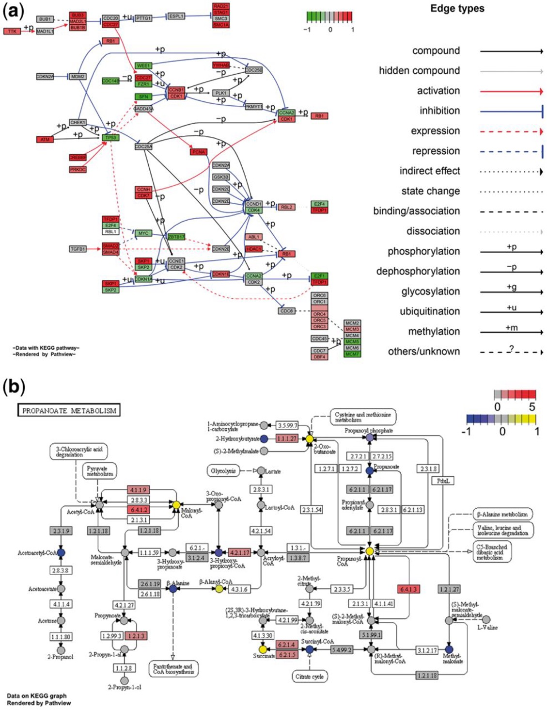
(a)展示了包含基因数据的经典信号通路（hsa04110 Cell cycle）的Graphviz视图；(b)展示了包含离散基因数据和连续代谢物数据的代谢通路（hsa00640 Propanoate metabolism）的KEGG视图。
图片、R包等均来源于Luo等人的文章。[1]
环境配置
系统要求： 跨平台（Linux/MacOS/Windows）
编程语言：R
依赖包：
pathview,dbplyr
数据准备
示例数据为基因表达矩阵: 行为基因的ENTREZ ID，列为样本名，表达数据经过归一化处理。其实这里可以为任何数值型数据，例如fold change, p-value等等，根据自己的需求来定。
data("gse16873.d")
head(gse16873.d) DCIS_1 DCIS_2 DCIS_3 DCIS_4 DCIS_5
10000 -0.30764480 -0.14722769 -0.023784808 -0.07056193 -0.001323087
10001 0.41586805 -0.33477259 -0.513136907 -0.16653712 0.111122223
10002 0.19854925 0.03789588 0.341865341 -0.08527420 0.767559264
10003 -0.23155297 -0.09659311 -0.104727283 -0.04801404 -0.208056443
100048912 -0.04490724 -0.05203146 0.036390376 0.04807823 0.027205816
10004 -0.08756237 -0.05027725 0.001821133 0.03023835 0.008034394
DCIS_6
10000 -0.15026813
10001 0.13400734
10002 0.15828609
10003 0.03344448
100048912 0.05444739
10004 -0.06860749gene_data <- as.data.frame(gse16873.d)
head(gene_data) DCIS_1 DCIS_2 DCIS_3 DCIS_4 DCIS_5
10000 -0.30764480 -0.14722769 -0.023784808 -0.07056193 -0.001323087
10001 0.41586805 -0.33477259 -0.513136907 -0.16653712 0.111122223
10002 0.19854925 0.03789588 0.341865341 -0.08527420 0.767559264
10003 -0.23155297 -0.09659311 -0.104727283 -0.04801404 -0.208056443
100048912 -0.04490724 -0.05203146 0.036390376 0.04807823 0.027205816
10004 -0.08756237 -0.05027725 0.001821133 0.03023835 0.008034394
DCIS_6
10000 -0.15026813
10001 0.13400734
10002 0.15828609
10003 0.03344448
100048912 0.05444739
10004 -0.06860749可视化
1. 基础绘图
观察单个样本（DCIS_1）的细胞周期信号通路图（KEGG ID: 04110）。
1.1 KEGG视图
当设置kegg.native = TRUE时，输出的通路图是基于原始KEGG视图绘制的。输出图像自动保存在了当前目录下。
p1 <- pathview(gene.data = gse16873.d[, 1], # 输入基因矩阵
pathway.id = "04110", # 通路ID
species = "hsa", # 物种：人类
out.suffix = "gse16873_KEGG", # 输出文件的后缀
kegg.native = T, # 以原始KEGG视图输出
same.layer = T # 绘制单个图层
)
p1
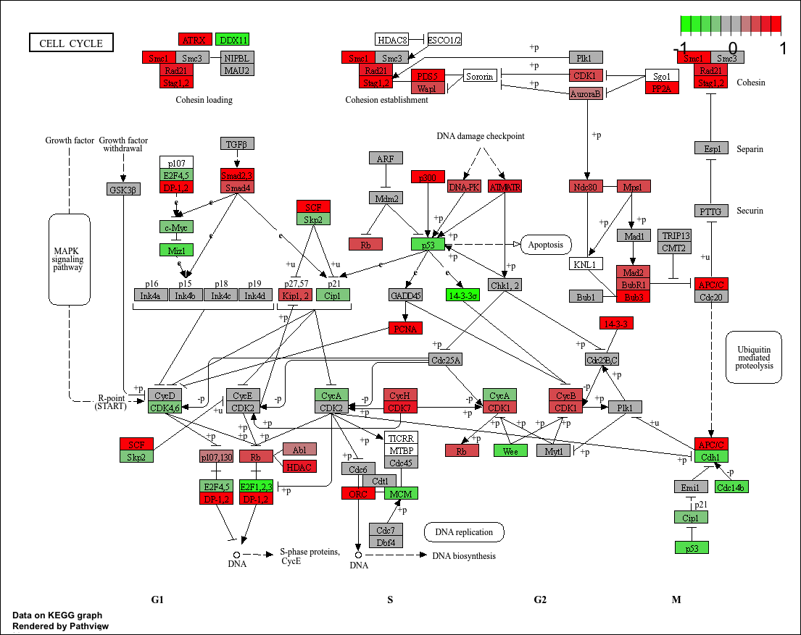
为了更好的理解kegg.native = TRUE，我们对比一下KEGG官网的Cell cycle的通路图（https://www.kegg.jp/pathway/map04110）
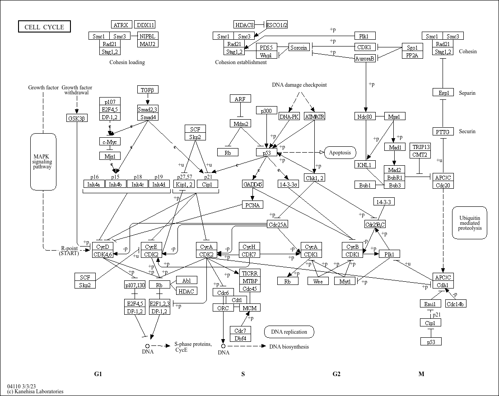
不难发现，我们输出的结果图其实就是在官网提供的通路图的基础上，对研究样本的通路基因的表达差异进行了可视化。而为当kegg.native = FALSE时，则改为使用Graphviz引擎制图，输出是PDF格式的向量图，这个后续会介绍。
然后我们再查看一下pathview函数输出结果p1的结构，其为一个长度为2的list。包含了我们绘图所需要的数据。
提示
plot.data.gene (data.frame)：储存画图用到的基因数据plot.data.cpd (data.frame)：储存画图用到的化合物数据kegg.names: 映射节点的基因/化合物的KEGG格式ID（即 Entrez Gene ID 或 KEGG Compound Accessions）labels: 映射节点的基因/化合物的名称all.mapped: 映射到该节点的所有基因/化合物的ID。type: 节点类型。（“基因”、“酶”、“化合物”、“同源物”）x: 原始KEGG通路图中的x坐标。y: 原始KEGG通路图中的y坐标。width: 原始KEGG通路图中的节点宽度。height: 原始KEGG通路图中的节点高度。mol.data: 映射节点的基因/化合物的数据（对应输入数据gene.data）mol.data: 映射节点的基因/化合物的颜色代码
1.2 Graphviz视图
介绍了以KEGG原始形式输出图像（kegg.native = TRUE）后，我们来看下使用Graphviz输出的图（kegg.native = FALSE）的图像格式。
p2 <- pathview(gene.data = gse16873.d[, 1],
pathway.id = "04110",
species = "hsa",
out.suffix = "gse16873_Graph",
kegg.native = F ,# 以Graphviz输出形式输出
same.layer = T # 绘制单个图层
)
p2
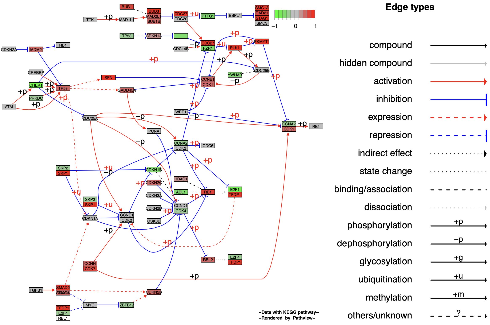
KEGG原始格式图保留了所有通路的元数据，即空间和时间信息、组织/细胞类型、输入、输出和连接，这对通路生物学的可读性和解释很重要。而Graphviz视图为PDF格式矢量图，可以更好地控制节点和边缘属性，更好地查看路径拓扑，如能够用Adobe illustration进行进一步美化。
在Graphviz形式输出的通路图中，same.layer参数的意义与KEGG原始图有所不同，转为描述图例与通路图的图层关系。当same.layer = TRUE时，图例和通路图处于同一个图层之中，并且图例只描述了边缘类型（Egde types），缺少了节点类型（Node types）。
当same.layer = FALSE时，图例和通路图分别处于两个图层，图例同时描述了边缘类型（Egde types）和节点类型（Node types）。
p3 <- pathview(gene.data = gse16873.d[, 1],
pathway.id = "04110",
species = "hsa",
out.suffix = "gse16873_Graph",
kegg.native = F ,# 以Graphviz输出形式输出
same.layer = T # 绘制单个图层
)
p3
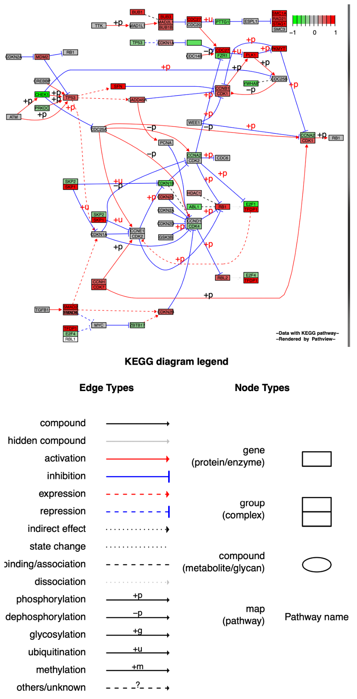
2. 图形调整
考虑到许多改变图形样式的参数仅在kegg.native = FALSE时生效，接下来我们多数情况也基于此来进行绘图
2.1 节点样式调整
p4 <- pathview(gene.data = gse16873.d[, 1],
pathway.id = "04110",
species = "hsa",
out.suffix = "gse16873_node",
kegg.native = F ,
same.layer = F ,
low = '#4575B4', #
mid = '#F7F7BD', #
high = '#D73027', #
cex = 0.5 ,# 字体大小
afactor = 1.6 ,# 节点大小
limit = list( gene = 2 ) # 图例上下限
)
p4
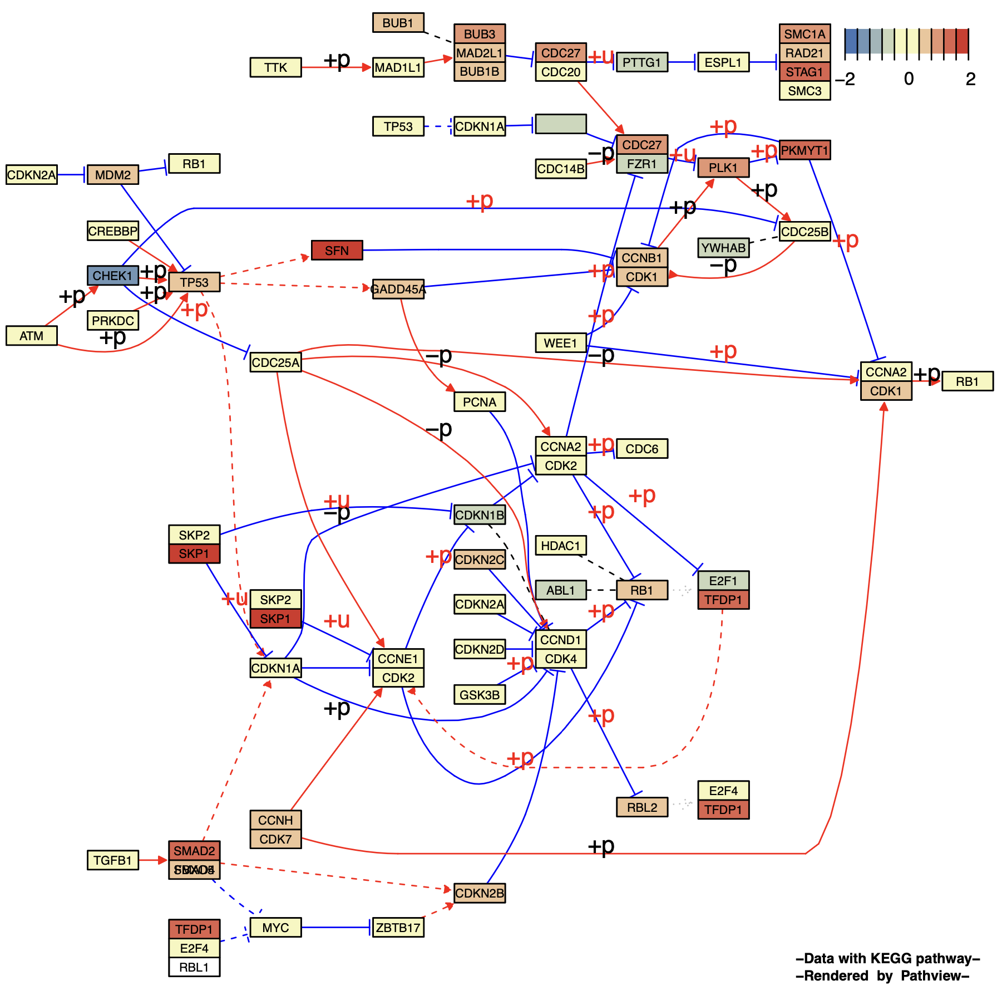
2.2 节点的拆分与扩展
通过设置参数split.group来实现控制节点组拆分为独立的节点，设置expand.node可以将多基因节点扩展为单个基因。
节点组的拆分 (split.group = TRUE) :
p5 <- pathview(gene.data = gse16873.d[, 1],
pathway.id = "04110",
species = "hsa",
out.suffix = "gse16873_split",
kegg.native = F ,
same.layer = F ,
split.group = T # TRUE
)
p5
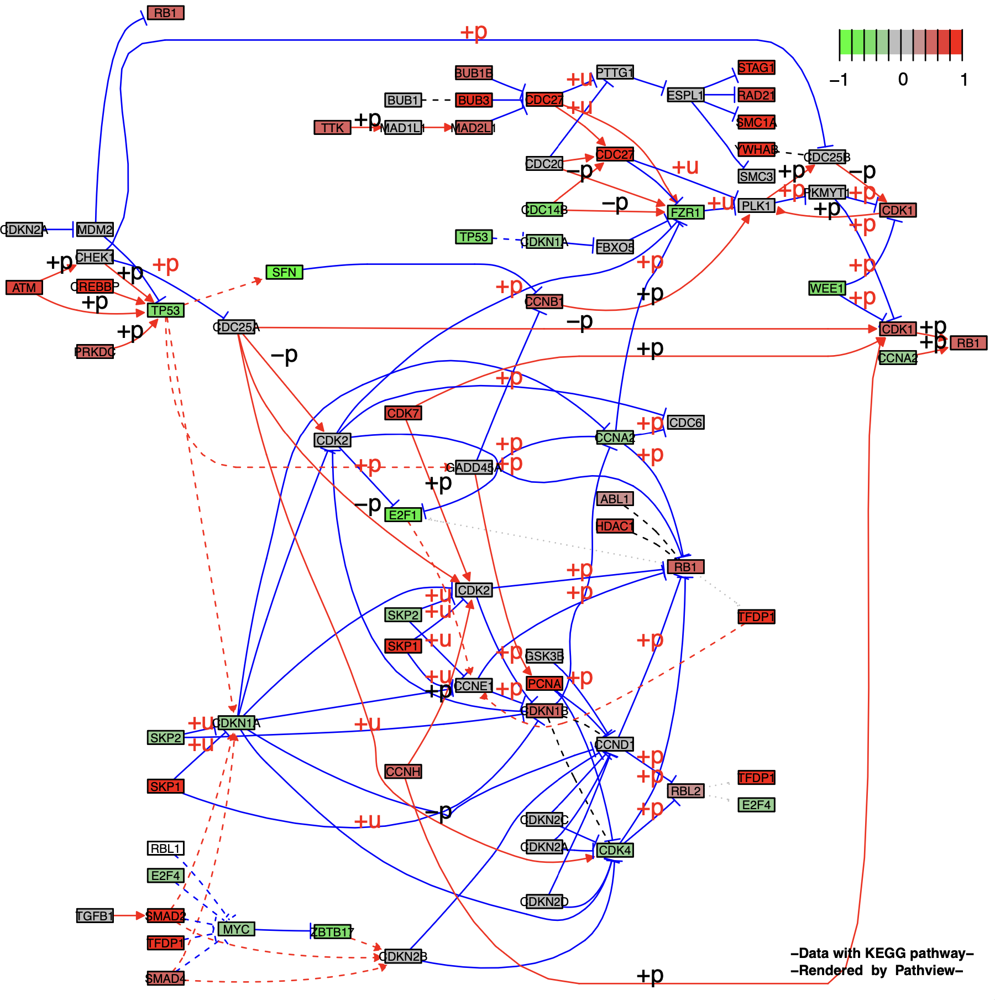
多基因节点扩展为单个基因：(split.group = TRUE & expand.node = TRUE):
p6 <- pathview(gene.data = gse16873.d[, 1],
pathway.id = "04110",
species = "hsa",
out.suffix = "gse16873_expand",
kegg.native = F ,
same.layer = F ,
split.group = T,
expand.node = T # TRUE
)
unique(p6$plot.data.gene$kegg.names) %>% length()
# [1] 88
unique(p7$plot.data.gene$kegg.names) %>% length()
# [1] 158
# 多出的节点即为原多基因节点的扩展
setdiff(unique(B),intersect(A,B))然后发现线条变得错综复杂，以至于我们重点关注的节点和节点之间的关系被淹没了。
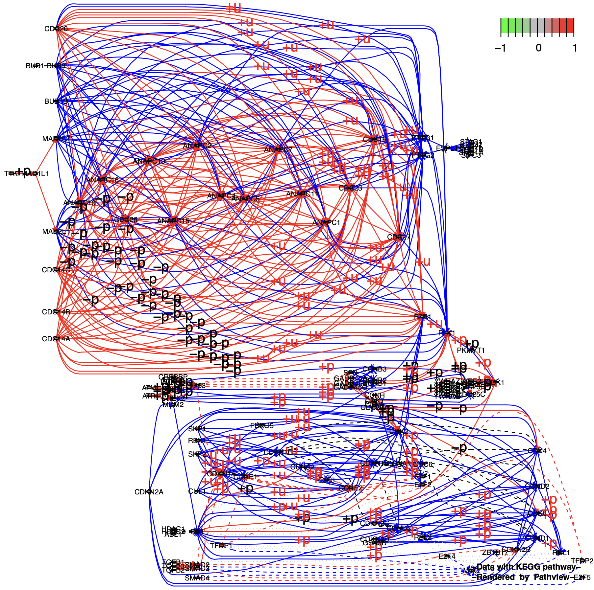
2.3 多组样本
以上例子仅绘制了单个样本的通路图，如果是为了比较两个或多个样本的通路变化情况，则需要设置multi.state = TRUE。可以将多个样本的数据整合到同一张通路图中。此时每个节点会被分割成多个片段，每个片段对应一个样本。
p8 <- pathview(gene.data = gse16873.d[, 1:3], # 多样本
pathway.id = "04110",
species = "hsa",
out.suffix = "gse16873_samples",
kegg.native = F ,
same.layer = F ,
multi.state = T #
)呈现的效果是：节点被分割成多个对应样本数量的片段，一个样本对应一个色块
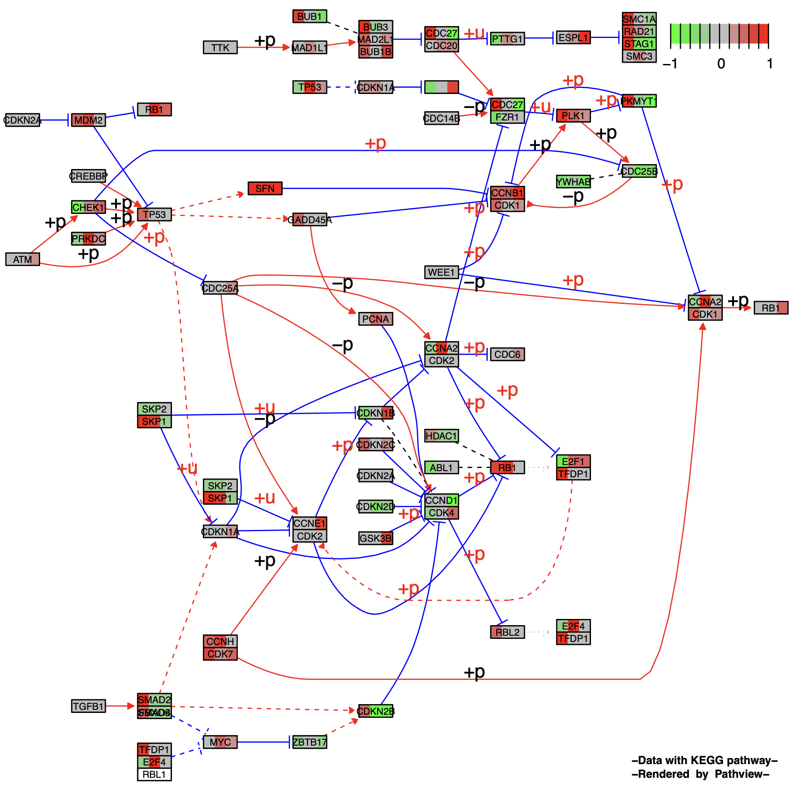
2.4 化合物的通路图
化合物数据
之前我们只介绍了基因数据的通路可视化，如果单纯做化合物数据的话，其实是跟基因一样的，只需要修改gene.data为cpd.data。
# 模拟6个样本的化合物数据
data("cpd.simtypes")
cpd_data <- sim.mol.data(mol.type="cpd", nmol=3000)
cpd_data2 <- matrix(sample(cpd_data,18000,replace = T), ncol = 6)
rownames(cpd_data2) = names(cpd_data)
colnames(cpd_data2) = colnames(gene_data)
head(cpd_data2)KEGG视图
p9 <- pathview(cpd.data = cpd_data2, # 化合物数据
pathway.id = "00640", #
species = "hsa",
out.suffix = "gse16873_KEGG_cpd",
kegg.native = T , # KEGG视图
same.layer = F
)
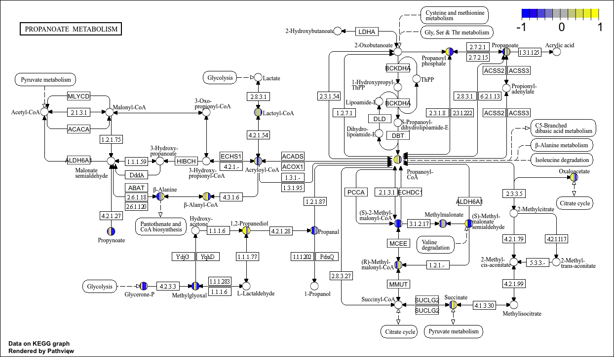
Graphviz视图
p10 <- pathview(cpd.data = cpd_data, # 化合物数据
pathway.id = "00640",
species = "hsa",
out.suffix = "gse16873_Graphviz_cpd",
kegg.native = F , # Graphviz视图
same.layer = F ,
cpd.lab.offset = -1.0 #化合物标签位置
)
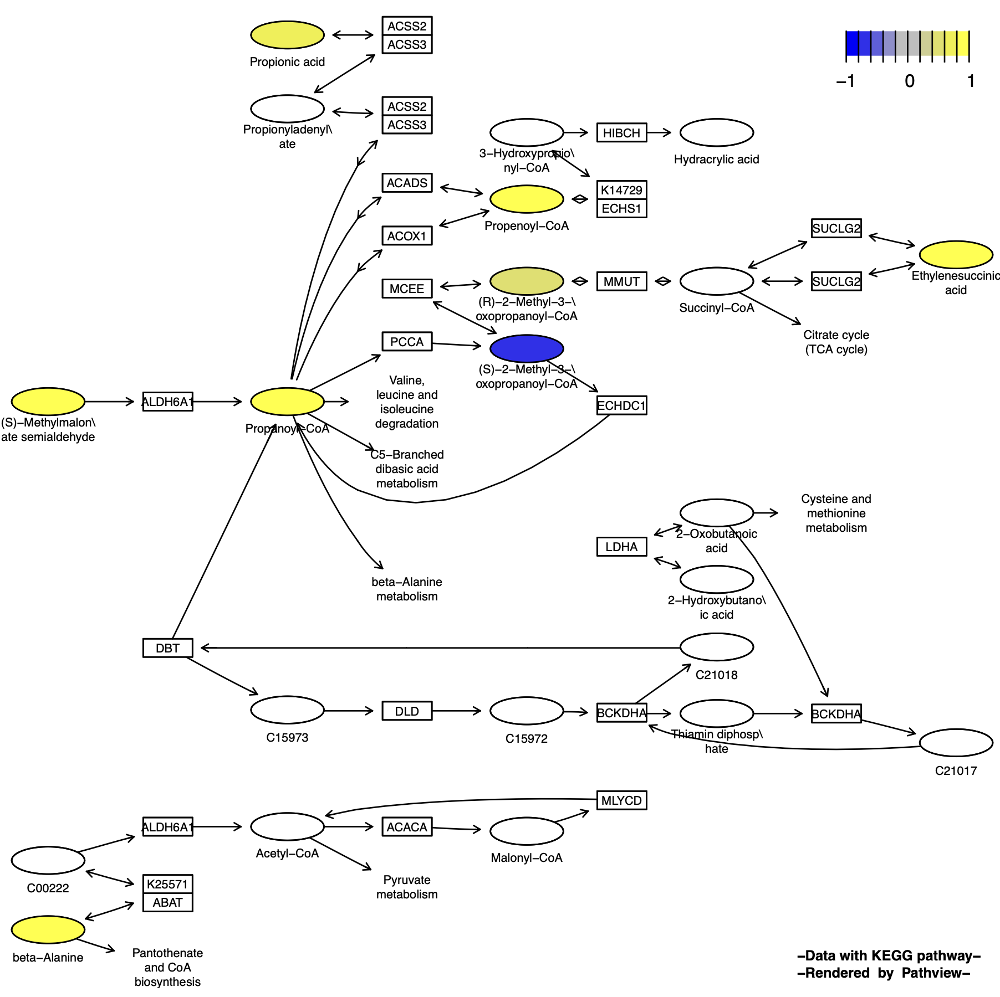
化合物和基因数据
接下来我们举例说明同时绘制基因和化合物数据的情况：
KEGG视图
p11 <- pathview(gene.data = gene_data[,1:4], # 基因数据
cpd.data = cpd_data2[,1:2], # 化合物数据
pathway.id = "00640",
species = "hsa",
out.suffix = "gse16873_KEGG_gene_cpd",
kegg.native = T , # KEGG视图
same.layer = F ,
cpd.lab.offset = -1.0 ,
key.pos = 'bottomright',
match.data = F, # 不匹配样本数
multi.state = T ,
bins = list(gene = 8, cpd = 8), # 改变图例色块的数量
low = list(gene = "#6495ED", cpd = "#006400"),
mid = list(gene = "#F7F7BD", cpd = "#F7F7BD"),
high = list(gene = "#D73027", cpd ="#FFD700")
)
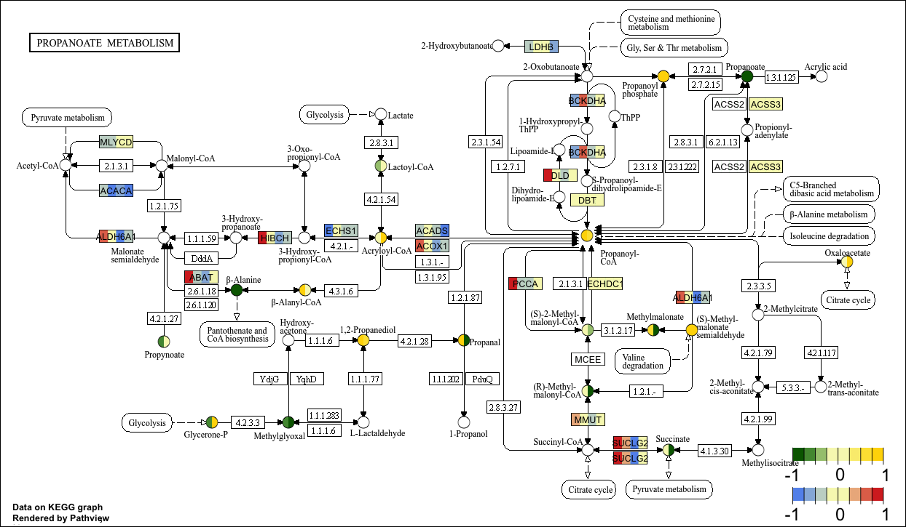
Graphviz视图
p12 <- pathview(gene.data = gene_data[,1:4], # 基因数据
cpd.data = cpd_data2[,1:2], # 化合物数据
pathway.id = "00640",
species = "hsa",
out.suffix = "gse16873_Graphviz_gene_cpd",
kegg.native = F , # Graphviz视图
same.layer = F ,
cpd.lab.offset = -1.0 ,
key.pos = 'topright',
match.data = F, # 不匹配样本数
multi.state = T ,
bins = list(gene = 10, cpd = 10), # 改变图例色块的数量
low = list(gene = "#6495ED", cpd = "#006400"),
mid = list(gene = "#F7F7BD", cpd = "#F7F7BD"),
high = list(gene = "#D73027", cpd ="#FFD700")
)
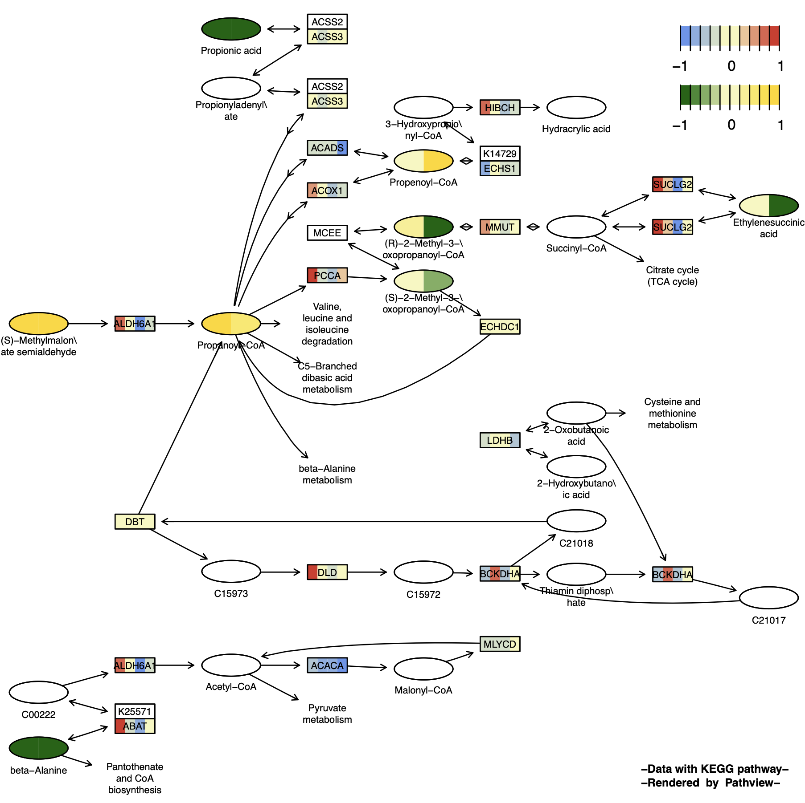
当gene和cpd数据的样本数不一致时，此时参数应设置为match.data=FALSE，若设置为match.data = TRUE，则样本数少的数据会生成相差的NA列以配对样本数量。默认NA数据为透明无色，可通过na.col设置颜色。
p13 <- pathview(gene.data = gene_data[,1:4],
cpd.data = cpd_data2[,1:2],
pathway.id = "00640",
species = "hsa",
out.suffix = "gse16873_Graphviz_gene_cpd_match",
kegg.native = F , # Graphviz视图
same.layer = F ,
cpd.lab.offset = -1.0 ,
key.pos = 'topright',
match.data = T, # 匹配样本数：为cpd添加2列NA
multi.state = T ,
bins = list(gene = 10, cpd = 10),
na.col = 'transparent' , # NA数据颜色设置
low = list(gene = "#6495ED", cpd = "#006400"),
mid = list(gene = "#F7F7BD", cpd = "#F7F7BD"),
high = list(gene = "#D73027", cpd ="#FFD700")
) 可以发现化合物节点只有一半是有颜色的，因为另一半是NA，默认为透明无色。
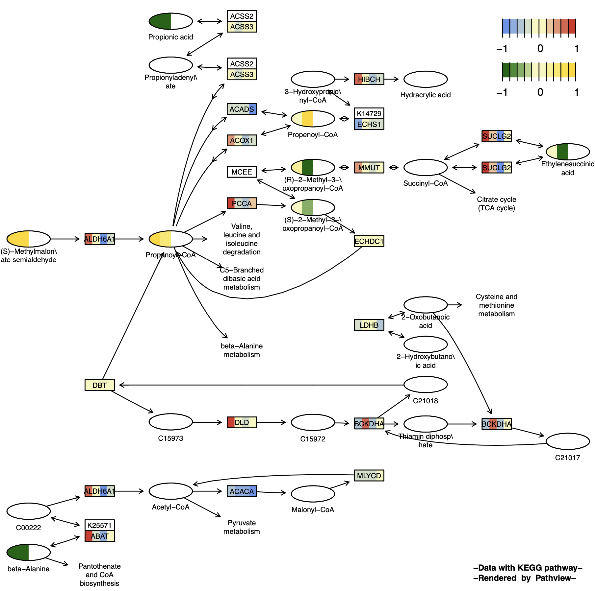
2.5 离散数据
如果我们的输入数据不是像上述例子的连续变量，而是如high/low的分类变量(可用1/0替换)或显著差异的基因名称，则需要设置discrete参数以绘制离散变量的通路视图。
这里我们取基因数据为离散变量1/0，而化合物为连续变量。
# 获取基因数据 （离散变量）
data("gse16873.d")
gene_data <- gse16873.d
colnames(gene_data)
gene_data2 <- apply(gene_data, 2, function(x){
ifelse(x > mean(x), 1 , 0 )
}) %>% as.data.frame()
str(gene_data2)p14 <- pathview(gene.data = gene_data2[,1:4], # 离散变量
cpd.data = cpd_data2[,1:2], # 连续变量
pathway.id = "00640",
species = "hsa",
out.suffix = "gse16873_KEGG_gene_cpd_discrete",
kegg.native = T , # KEGG视图
same.layer = F ,
cpd.lab.offset = -1.0 ,
key.pos = 'topright',
match.data = F,
multi.state = T ,
bins = list(gene = 1, cpd = 6),
low = list(gene = "#F7F7BD", cpd = "#006400"),
mid = list(gene = "#F7F7BD", cpd = "#F7F7BD"),
high = list(gene = "#D73027", cpd ="#FFD700"),
discrete = list(gene = T, cpd = F) ,# 离散数据为T
limit = list(gene = 1, cpd = c(-1,1)) ,
both.dirs = list(gene = F, cpd = T) # gene为单向数据
)
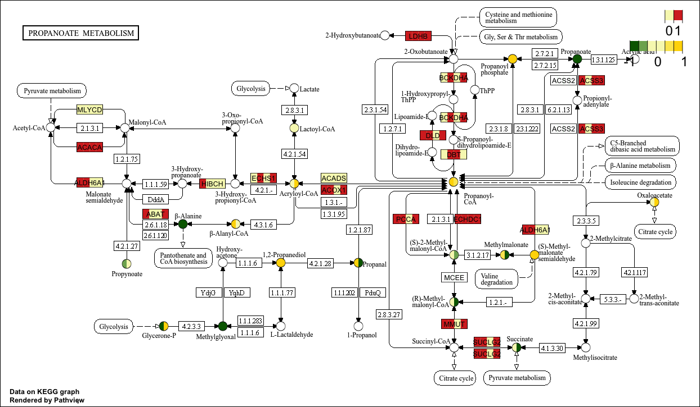
p15 <- pathview(gene.data = gene_data[,1:4], # 离散变量
cpd.data = cpd_data2[,1:2], # 连续变量
pathway.id = "00640",
species = "hsa",
out.suffix = "gse16873_Graphviz_gene_cpd_discrete",
kegg.native = F , # Graphviz视图
same.layer = F ,
cpd.lab.offset = -1.0 ,
key.pos = 'topright',
match.data = F,
multi.state = T ,
bins = list(gene = 1, cpd = 6),
low = list(gene = "#F7F7BD", cpd = "#006400"),
mid = list(gene = "#F7F7BD", cpd = "#F7F7BD"),
high = list(gene = "#D73027", cpd ="#FFD700"),
discrete = list(gene = T, cpd = F) ,# 离散数据为T
limit = list(gene = 1, cpd = c(-1,1)),
both.dirs = list(gene = F, cpd = T) # gene.data为单向数据
)
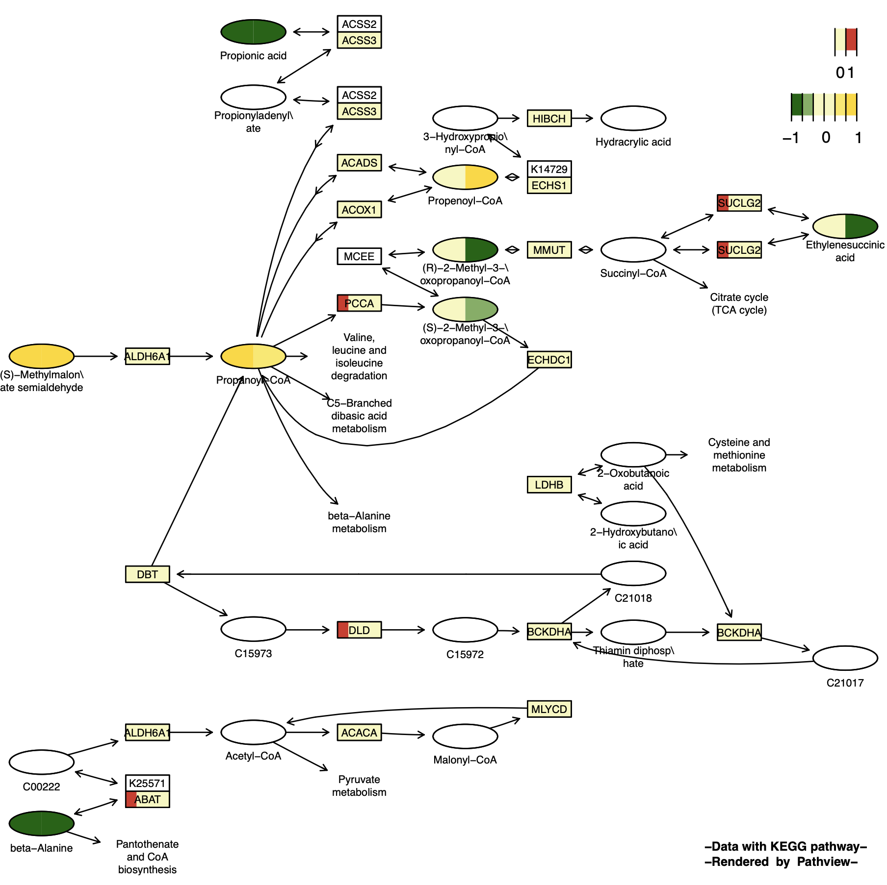
应用场景
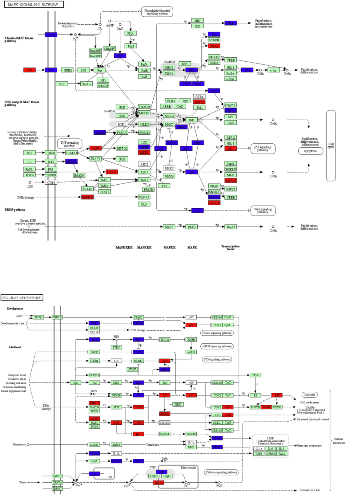
该图展示了关键的KEGG途径：MAPK信号通路和细胞衰老信号通路。红色节点代表cingulin b-mo突变体中上调的DEG，绿色标记的节点代表cingulin b-mo突变体中下调的DEG，而蓝色标记的节点代表对照MO和c链蛋白B-MO胚胎之间的重叠靶标。该分析是从不同组的三个独立实验进行的，每个组都有30个胚胎。[2]
参考文献
[1] Luo, W., & Brouwer, C. (2013). Pathview: an R/Bioconductor package for pathway-based data integration and visualization. Bioinformatics (Oxford, England), 29(14), 1830–1831. https://doi.org/10.1093/bioinformatics/btt285IF: 4.4 B3.
[2] Lu Y, Tang D, Zheng Z, et al. Cingulin b Is Required for Zebrafish Lateral Line Development Through Regulation of Mitogen-Activated Protein Kinase and Cellular Senescence Signaling Pathways. Front Mol Neurosci. 2022;15:844668. Published 2022 May 5. doi:10.3389/fnmol.2022.844668.